| 亲爱的博友们： 大家好。新浪博客从今天开始可以进行升级啦！立刻升级
您也可以按登录后的提示进行升级，具体如下：
1、登录并进入自己的博客首页。
2、点击个人博客首页右侧的“立刻升级”按钮（见图1）即可轻松升级，升级后，您将获赠100个积分。 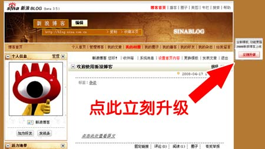 http://hiphotos.baidu.com/hxzon/pic/item/3058b411708f0b2bcb80c4f9.jpg
图1 “立刻升级”按钮 温馨提醒：
(1)点击升级按钮并确认后，我们将在24小时内将您的博客升级到新的版本。还请您耐心等待。
(2)升级过程中，请您避免使用“更换模板”、“添加模块”功能。其他如发表文章和评论等功能不受影响。
(3)升级完成后，我们将给您发送升级成功的系统消息。 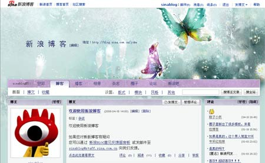 http://hiphotos.baidu.com/hxzon/pic/item/5e60d7c89f1b72427e3e6ff9.jpg
图2 升级后的页面 3、新版博客在原版本的基础上进行了多方位的提升，为大家提供了更多全新的服务，具体如下： (1)全新的界面风格供您选择。
新版博客为大家提供了8大类共200套不同风格的模板。见图3。 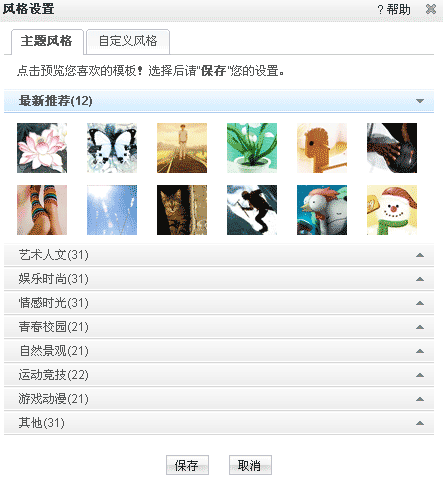 http://hiphotos.baidu.com/hxzon/pic/item/58b9b67e2f1cde6d0dd7daf9.jpg
图3 页面风格 (2)全新的文章收藏功能。
您可以将您喜欢的文章收藏在自己的博客中，方便您查找。收藏次数反映该文章受欢迎程度。见图4。 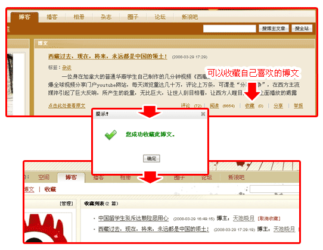 http://hiphotos.baidu.com/hxzon/pic/item/012a6338eb4b2a7696ddd8f9.jpg
图4 收藏文章 (3)全新的文章置顶功能。
您可以置顶一篇您的文章。别人浏览您的博客时，第一眼就能看到。见图5。 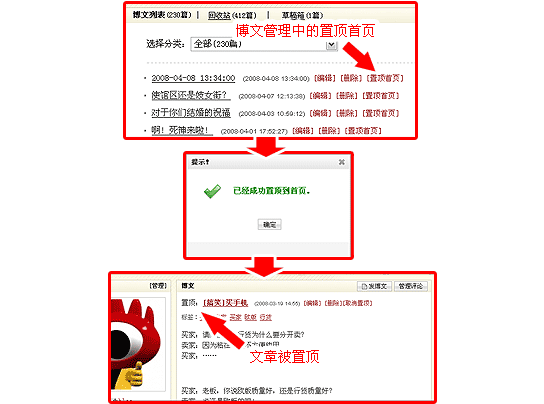 http://hiphotos.baidu.com/hxzon/pic/item/c77d97237e411a11ac34def9.jpg
图5 置顶文章 (4)全新的文章评论回复功能。
您可以对针对您文章的评论进行回复，及时和评论您博文的网友进行交流。见图6 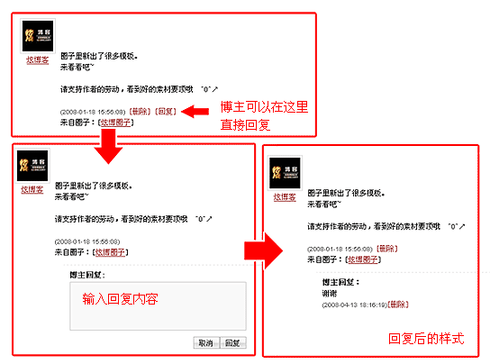 http://hiphotos.baidu.com/hxzon/pic/item/5c77a74446a8e2d7b3b7dcf9.jpg
图6 回复评论 (5)优化后的文章编辑器。
为方便您的使用，我们提供了基本功能和高级功能两种模式的编辑器供您选择。见图7。 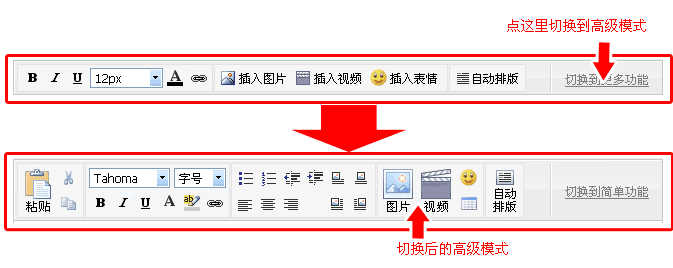 http://hiphotos.baidu.com/hxzon/pic/item/029776cf055a2468f9dc61f9.jpg
图7 两种模式的编辑器 (6)发布图片功能整合。
我们将本地图片、新浪相册图片和网络图片发布整合在一起，便于您的操作。见图8。 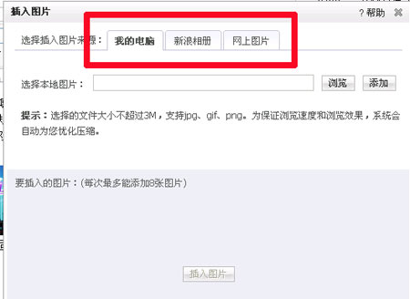 http://hiphotos.baidu.com/hxzon/pic/item/669e5f825f2b6bf70df4d2f9.jpg
图6 发布图片功能 (7)所见即所得的管理模式。
您可以方便快捷地在页面上直接进行全部的操作。不需要再进入一个单独的后台。见图9。 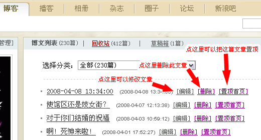 http://hiphotos.baidu.com/hxzon/pic/item/f06d993db8416a55bba167f9.jpg
图9 所见即所得的管理模式 (8)全新的博主问答模块。博主问答详细介绍
您可以和访问您博客的朋友进行更直接的交流。见图10。 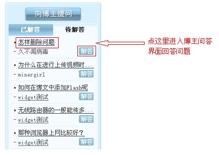 http://hiphotos.baidu.com/hxzon/pic/item/710bcb113616fc45b8127bf9.jpg
图10 博主问答模块 (9)相册模块全面升级。相册模块详细介绍
升级后的相册组件功能更强，将让您的图片更加绚丽。见图11、12。 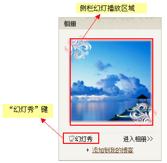 http://hiphotos.baidu.com/hxzon/pic/item/b9214110ff8f73a9c2ce79f9.jpg
图11 相册模块 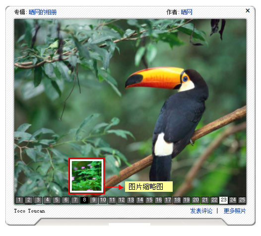 http://hiphotos.baidu.com/hxzon/pic/item/791dd6a2e3688af8caefd0f9.jpg
图12 相册模块幻灯播放模式 (10)全新的迷你播放器模板。迷你播放器详细介绍
升级后的播客模块就像一台迷你电视机，快拿起遥控器试试吧！见图13、14。 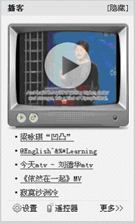 http://hiphotos.baidu.com/hxzon/pic/item/72b8cefc8b5378a8fd037ff9.jpg
图13 迷你播放器模块 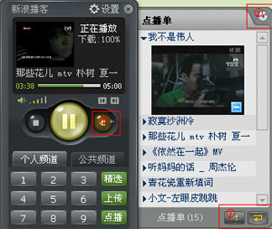 http://hiphotos.baidu.com/hxzon/pic/item/c75e37ad3a73cd5c4a36d6f9.jpg
图14 遥控器和点播单 (11)积分功能。
积分是新浪博客对您写博客的认可。我们鼓励用户坚持写博客，让记录、交流、分享成为健康的生活新方式。将来根据积分，您可以获得更多新的服务和功能。
新版博客中所有用户积分起点为 0，老用户主动升级博客将获赠 100 积分。
积分规则：
·1天内有过博客登录记录的用户获得1个积分；
·1天内发表过文章的用户获得2个积分；
·1天内发表过评论的用户获得2个积分（自己给自己评论、博主回复评论不获得积分）； (12)用户等级。
等级是用户在新浪博客中影响力的综合体现。现在的等级系统暂由个人博客的访问量转换，访问量大的用户级别就会越高。以后的等级体系将由多方面的因素综合而得，更多的体现博主的综合影响力。
查看等级和浏览量对照表 更多详细介绍，请查看新浪博客帮助页面。新浪博客帮助页 新版博客主要功能调整，请查看相关页面。新浪博客主要功能调整 升级后好友组件说明。
由于空间中可以控制博客好友是否可见，所以博客升级后，好友组件可能出现以下几种情况：
如果您博客上有好友组件
·如果您在空间里设置为全部好友可见，升级后，所有用户都可以见到您的好友；
·如果您在空间里设置为仅亲密好友可见，升级后，只有您的亲密好友可以见到您的好友； 如果您博客上没有好友组件
·如果您在空间里设置为全部好友可见，升级后，当您加载好友组件时，只有您的好友可以见到；
·如果您在空间里设置为仅亲密好友可见，升级后，当您加载好友组件时，只有您的亲密好友可以见到；
·如果您在空间里设置为所有用户可见，升级后，当您选载好友组件时，所有用户可以见到； 您可以在您的空间设置好友的权限。进入空间 如果您对新版博客有疑问，您也可以通过 新浪BLOG意见反馈留言板 或发邮件至sinablog@staff.sina.com.cn向我们反馈。
新浪博客
2008年4月18日
|